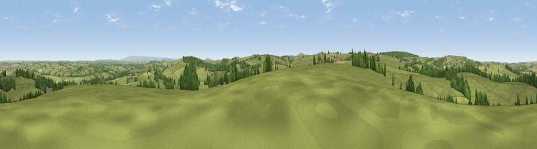

Viewpoint near Tresmeer
#15067 in England · top 23% of its area beats it · near TresmeerThe view, rendered

A 360° render of this exact spot computed from the terrain model, tree cover and land cover — summer colours, afternoon light, calibrated against photographs of famous viewpoints. Real trees, hedges and buildings will differ in detail.
The panorama
Grey silhouette: terrain skyline in each direction (720 bearings, Earth curvature and refraction included). Dashed green: skyline with trees (+15 m) and buildings (+8 m) as obstacles. Blue strip: how far the ground is visible on each bearing.
Where the view opens
Wedge length = distance to the farthest visible ground on that bearing (vegetation-aware). Rings at 10, 25 and 50 km.
What fills the view
84% grassland · 11% woodland · 4% cropland ·
Angular shares of the visible panorama (visual magnitude), not map area. Landscape diversity 0.25 (0–1 Shannon).
Key numbers
More beautiful places nearby
The staircase of upgrades: each row has a higher view potential than everything closer. Driving times are estimates from straight-line distance, calibrated against real road routing — check an actual route before setting out.
| Place | Direction | Drive | Score |
|---|---|---|---|
| Viewpoint near Tregeare | ESE · 2 km | ~6 min | 59.9 |
| Viewpoint near Warbstow | NW · 4 km | ~9 min | 71.2 |
| Showery Tor | SW · 11 km | ~20 min | 73.3 |
| Brown Willy | SW · 11 km | ~21 min | 77.3 |
| Tresparrett Down | WNW · 11 km | ~21 min | 80.8 |
| Viewpoint near Lesnewth | WNW · 12 km | ~22 min | 87.7 |
| Viewpoint near Crackington Haven | WNW · 12 km | ~22 min | 88.1 |
| Viewpoint near Combe Martin | NNE · 70 km | ~93 min | 88.9 |
50.66589, -4.50278 · source: screening · position refined by local search. Computed location — check access rights before visiting.